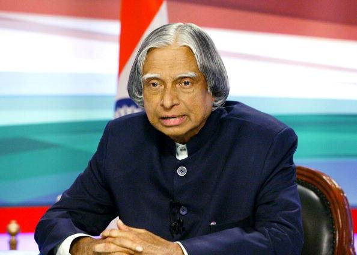

“Dream, dream, dream. Dreams transform into thoughts and thoughts result in action.”
Dr. A.P.J. Abdul Kalam, known as the "Missile Man of India," was a distinguished aerospace scientist and the 11th President of India. His significant contributions to India's space and missile programs transformed the nation into a global power in defense technology. Dr. Kalam's legacy as a visionary leader and an advocate for education continues to inspire millions, particularly the youth.